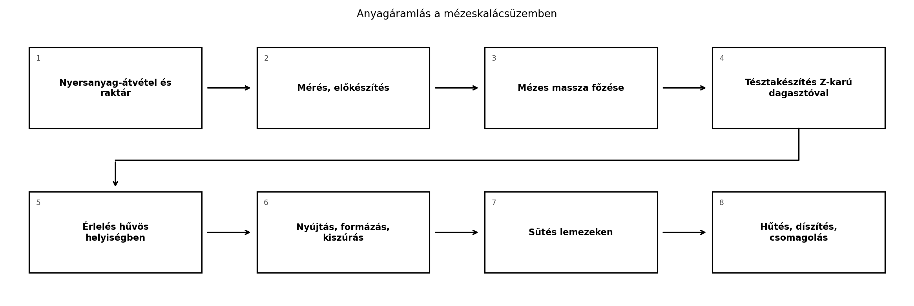

A mézeskalácsüzemben nem ugyanaz a munkarend, mint a kenyérsütő pékségben. A kenyértésztát gyorsan kidolgozzuk, rövid ideig kelesztjük, majd forró kemencében sütjük. A mézeskalács ezzel szemben kemény, ragadós tészta, amelyet hosszú ideig, hűvös, páramentes helyen érlelünk. Ha rossz helyiségben tároljuk, a tészta kiszárad, megpenészedik vagy elveszíti a formázhatóságát. Ha a dagasztógép típusa nem illik a ragadós, mézes tésztához, a tészta nem keveredik egyenletesen, a minták elmosódnak, sütés közben a felület repedezik. Ezért a mézeskalácsüzem helyiségeit, gépeit és szerszámait a mézes tészta sajátosságaihoz kell igazítani. Ebben az alfejezetben ezeket vesszük sorra: a helyiségek rendjét, a Z-karú dagasztógépet, a feldolgozó és főzőberendezéseket, valamint a kéziszerszámokat.
A mézeskalácsüzem – a hagyományos kis műhelytől a korszerű üzemig – akkor dolgozik biztonságosan, ha a nyersanyag, a tészta, a késztermék és a dolgozó útja nem keresztezi egymást. A következő folyamatábra tipikus anyagáramlást mutat. Az irány nem merev előírás, hanem a jó higiéniai gyakorlatból (GHP) levezethető rendezőelv.

Az ábrán látható, hogy a nyersanyagok előbb raktárba kerülnek, onnan a mérlegelőbe, majd a főzőbe, a dagasztóba, az érlelőbe, a formázóba, a sütőbe, végül a díszítő-csomagolóba. A szennyes eszközök, rekeszek és az üres göngyöleg visszafelé, elkülönített úton mozognak. Az élelmiszer-biztonság egyik alapelve, hogy a nyers és sütött termék, illetve a tiszta és szennyes eszköz lehetőleg ne találkozzon.
Definíció. A mézeskalácsüzem helyiségeit a termék útja szerint csoportosítjuk: nyersanyagraktár, előkészítő, főző, dagasztó, érlelő-tároló, formázó-nyújtó, sütő, hűtő-díszítő, csomagoló és mosogató. Kisüzemben egyes helyiségek összevonhatók, de a műveletek térben és időben akkor is elkülönítendők.
Nyersanyagraktár. A lisztet, cukrot, mézet, zsiradékot, tojást, tejet, fűszereket, diót, mandulát, kémiai lazítószereket (például szalalkáli, sütőpor) száraz, hűvös, szellős, kártevőktől védett helyen tároljuk. A mézet és az invertszirupot zárt edényben, a tojást hűtőben, a diót, mandulát hűvös, lehetőleg hűtött térben. A kémiai lazítószereket és a tisztítószereket az élelmiszerektől elkülönítve, jelölt helyen kell tartani.
Előírás. Az élelmiszer-higiéniáról szóló 852/2004/EK rendelet szerint a helyiségek kialakításának, elrendezésének és méretének lehetővé kell tennie a helyes higiéniai gyakorlat alkalmazását, a szennyeződés megelőzését és a tisztíthatóságot (ellenőrizendő: a rendelet II. mellékletének aktuális követelményei).
Tároló- és érlelőhelyiség. A mézeskalácstészta érlelése nem kelesztés. A kémiai lazítószerek a sütés közben dolgoznak, ezért a tészta érlelése alatt nincs szükség melegre. A cél a fűszerek és a méz ízanyagainak kioldódása, a liszt nedvességfelvétele és a tészta pihentetése. Az érlelőhelyiség legyen hűvös, lehetőleg 5–12 °C közötti, jól szellőző, közvetlen napfénytől védett (ellenőrizendő: üzemi technológiai előírás). A levegő ne legyen túl száraz, mert a tészta bőrt kap, de nedves se, mert a felülete nyúlósodhat, penészedhet. A tésztát letakarva, zsírozott vagy fóliázott felülettel tároljuk. Nagyobb üzemben a hűtőtároló egyben érlelő is lehet, de a hőmérsékletet és a páratartalmat folyamatosan figyelni kell.
HACCP. Az érlelés kritikus időtartamú művelet. A nyers tésztában lévő tojás, tej vagy dió a szobahőmérsékleten tartott tésztában romlást, illetve mikrobasejtek szaporodását okozhatja. A hűvös, legfeljebb 12 °C-os érlelés ezért nem kényelmi, hanem élelmiszer-biztonsági előírás jellegű tanulási határérték (ellenőrizendő: a pékség HACCP-terve, hatósági útmutató). Az érlelési időt, hőmérsékletet és a tétel azonosítóját dokumentálni kell.
Díszítő. A díszítőhelyiség a mézeskalács kényes pontja. Itt porcukor, tojásfehérje, ételfesték, cukormáz, aszalt gyümölcs, dió, mandula kerülhet a termékre. A helyiség legyen világos, könnyen tisztítható, pormentes, és a nyers tésztától elkülönített. A tojásfehérjét és a tejterméket a hűtőben kell tartani, a maradékot a munka végén el kell távolítani vagy jelölve hűteni. A díszítőeszközöket minden munkanap végén mosni, szükség esetén fertőtleníteni kell.
A mézeskalácstészta kemény, magas cukor- és méztartalmú, gyakran ragadós. A hagyományos spiráldagasztó nem alkalmas rá, mert a nagy nyíróerő túlmelegíti, és a tészta feltapad a spirálra. A Z-karú dagasztógép két, egymásba kapcsolódó, Z alakú karjával a tésztát gyúrja, hajtogatja és keveri, anélkül hogy hosszú, levegős tésztaszálat fejlesztene. Ez a gép a Dagasztógépek és keverőgépek alfejezetben már bemutatott tésztakészítő gépek egyik típusa, ezért itt a mézeskalácsra jellemző üzemeltetési és biztonsági tudnivalókat hangsúlyozzuk.
Felépítés. A Z-karú dagasztógép fő részei:
A csésze általában rozsdamentes acélból készül, a karok is élelmiszeripari minőségű anyagból. A hajtómű a karokat fogaskerék-áttétellel mozgatja, a billentés pedig kézi kerékkel vagy motorral történik.
Az alábbi ábra bal oldala a gépet elölről mutatja a felsorolt részekkel (1–8), a jobb oldala a csészét felülről: a két kar ellentétes irányban forog, és a sraffozott sávokban – a karok között, valamint a kar és a csészefal között – a tészta, és vele a benyúló kéz is, behúzódik és összenyomódik.
A vészleállító (7) a gépet azonnal leállítja, de nem választja le a hálózatról. Mielőtt a csészébe nyúlnánk (kaparás, mintavétel), vagy tisztítanánk, a gépet le kell állítani, meg kell várni a karok teljes megállását, a billentést rögzíteni kell, és a legbiztonságosabb a főkapcsolóval (8) le is választani és újraindítás ellen biztosítani; tisztításnál és beavatkozásnál ez kötelező (ellenőrizendő: gépkönyv, üzemi kezelési utasítás). A HTML-kiadásban az alkatrészek rámutatással kiemelhetők, a védőelemek és a veszélyzóna rétegként kapcsolhatók.
Működés. A dagasztás során a karok alacsony fordulaton, egymással ellentétes irányban forognak. A tésztát a csésze aljáról felkapják, a két kar közé préselik, összehajtogatják, majd a csésze falához lapítják. Ez a mozgás kíméletesen, de hatékonyan keveri össze a mézet, a cukrot, a lisztet, a tojást és a fűszereket. A tészta nem melegszik túl, és nem keveredik bele annyi levegő, mint a spiráldagasztónál. A Z-karú gép különösen jól használható nagy viszkozitású, tömör tészták, például mézeskalács, gyümölcskenyér vagy keksztészta készítésére.
Gépbiztonság. A Z-karú dagasztógép a lassú fordulatszám ellenére súlyos balesetveszélyt jelent, mert a karok erős szorító és gyúró hatást fejtenek ki. A következő szabályok mindig érvényesek:
Gépápolás. A Z-karú dagasztógép tisztítását és karbantartását a gyártói adatlap és az üzemi utasítás szerint kell végezni. A tészta maradványait lehetőleg még nedvesen, a dagasztás után, arra alkalmas kaparóval távolítsd el. Éles fémszerszámot nem használunk, mert a rozsdamentes felületet megkarcolja. A mosáshoz élelmiszeripari tisztítószert és puha kefét használjunk. Az elektromos részeket, a hajtóművet és a csapágyakat csak szakember ellenőrizheti, kenheti. A tanuló a tiszta, száraz, sérülésmentes csésze és karok ellenőrzését végzi el.
Figyelem. A ragadós mézes tészta a csésze falán és a karokon megtapad. A kézzel való kaparás, a géppel együtt forgó karra dőlt test, a laza munkaruha vagy a hosszú haj rendkívül veszélyes. A hosszú hajat mindig hajháló, a laza ruhát szűk munkaruha alá kell rendezni.
A mézeskalácsüzemben a Z-karú dagasztógépen kívül további gépek is dolgoznak. A tésztakészítés előtt a mézet vagy a mézes-cukros oldatot gyakran melegíteni, főzni kell. A feldolgozás során a tésztát nyújtani, kiszúrni, formázni kell.
Főzőberendezés. A nagyobb mézeskalácsüzemekben gőz- vagy vízköpenyes, keverővel ellátott főzőüstöt használnak a mézes massza előállítására. Az üstben a mézet, a vizet, a cukrot és az esetleges zsiradékot melegítik, miközben a keverő folyamatosan mozgatja. A hőmérsékletet folyamatosan mérni kell. A masszát visszahűtve, előírt hőmérsékleten adagolják a dagasztógépbe. A forró massza gőz- és forrázásveszélyt jelent, ezért az üstöt védőfedéllel, kiöntő peremmel és vészleállítóval kell felszerelni. A kezelő hosszú ujjú, hőálló kesztyűt és védőszemüveget visel.
Gépbiztonság. A főzőüstben lévő forró massza keverője alatt, a gép működése közben a kéz, a merőkanál vagy a hőmérő akadályt okozhat, és a kifröccsenő anyag égést okoz. A keverő csak leállított, áramtalanított gépen vizsgálható. A forró edényből mintát venni csak a gépkönyv szerinti módon, merítőkanállal vagy mintavevővel szabad.
Nyújtó- és formázógépek. A mézeskalács tésztát a feldolgozó asztalon nyújtófával vagy gépi hengerpárral nyújtjuk. A gépi nyújtás előnye az egyenletes vastagság, ami a mézeskalácsnál a sütési egyenletesség alapja. A nyújtógép védőburkolatát, a hengerhézagot és a vészleállítót mindig ellenőrizni kell. A tészta adagolása a gépre csak leállított hengerrel, spatulával, nem kézzel történik.
A kiszúrást kézzel vagy gépi excenterpréssel végzik. A gépi kiszúró prés felülről lefelé, nagy erővel nyomja a mintázó formát a tésztába. A prés alá benyúlni a működés közben tilos. A formacserét csak leállított, nyomásmentesített gépen szabad elvégezni.
Kisgépek és segédeszközök. A díszítőben gyakori a kézi habverő, a kis bolygóműves keverő a tojásfehérje, a cukormáz vagy a töltelékek készítéséhez. A bolygóműves keverőre is ugyanaz a szabály vonatkozik: a habverő vagy lapát cseréje, a tál kaparása csak leállított, áramtalanított gépen, a forgó szerszám teljes megállása után végezhető. A szilikonos, rozsdamentes vagy fém eszközök használata a keverőtálban csak kikapcsolt géppel megengedett.
A mézeskalács-készítésben a kéziszerszámok minősége közvetlenül befolyásolja a termék formáját, méretét és mintáit. A szerszámokat a tészta jellegéhez kell kiválasztani, és minden használat előtt ellenőrizni.
Kiszúrók. A kiszúrók éles peremű fém- vagy műanyag sablonok, amelyekkel a kinyújtott tésztából azonos méretű és alakú darabokat vágunk. A hagyományos minták: szív, huszár, báb, csillag, fenyőfa, angyal, házikó. A kiszúrókat a tésztára kell helyezni, egyenletesen rányomni, majd határozottan kihúzni. Az éles peremet használat előtt ellenőrizni kell: a deformált, rozsdás szerszám roncsolja a felületet. A kiszúrókat mosogatás után szárítva, rozsdamentes vagy műanyag fiókban tároljuk.
Kések és vágóeszközök. A tésztából csíkokat, ablakokat, díszítőelemeket vágnak ki. A kések legyenek élesek, rozsdamentes acélból. A tompa kés a tésztát húzza, a felületet szakítja, a minta széle elkenődik. A vágóeszközöket a többi szerszámtól elkülönítve, védőtokban tároljuk.
Formák. A mézeskalácsformák hagyományosan faragott fából vagy élelmiszeripari műanyagból készülnek. A faforma a tésztába nyomva mély, domború mintát ad. A formát minden esetben lisztezni vagy olajozni kell, hogy a tészta ne ragadjon bele. A faformát tisztításkor nem szabad áztatni, mert a fa megduzzad és reped. Száraz kefével, majd enyhén nedves ruhával tisztítjuk, és teljesen megszárítjuk. A faforma repedéseibe liszt, tészta, nedvesség kerülhet, ami penészesedést okozhat. A sérült faformát ki kell vonni a használatból, vagy szakemberrel javíttatni.
Verőfák. A verőfa vagy mintázófa a felületbe nyomott vonalak, rácsminták, rovátkák kialakítására szolgál. A fából készült, bordázott vagy mintázott hengerrel a kinyújtott tésztát egyszer vagy többször, egyenletes nyomással végiggörgetjük. A verőfát is lisztezni kell, és használat után szárazon tisztítani.
Nyújtófák és gyúródeszkák. A nyújtófa legyen sima felületű, könnyen forgatható, a munkalap pedig rozsdamentes, márvány vagy élelmiszeripari műanyag. A tészta nyújtása előtt a felületet vékonyan lisztezzük. A lisztből ne kerüljön sok a tésztába, mert a felesleg a sütés során fehér foltot, repedést okozhat.
Lemezek. A mézeskalács sütéséhez sík vagy enyhén peremes sütőlemezeket, tepsiket használunk. A lemez anyaga általában alumínium, rozsdamentes acél vagy acél, lehet sötét vagy világos bevonatú. A sötét bevonatú lemezek jobban elnyelik a hőt, ezért a sütési idő és hőmérséklet eltérhet. A lemezt mindig a termék méretéhez kell választani, és a sütés előtt elő kell készíteni: tisztítani, szükség szerint vékonyan zsírozni, lisztezni vagy sütőpapírral bélelni. A mézeskalácsnál a ragadós tészta miatt a sütőpapír vagy az alapos, vékony zsírozás, majd lisztezés megbízhatóbb a puszta lemeznél.
A felsorolt szerszámokat az alábbi tabló mutatja, a fenti sorrendben számozva (1–6). A faformánál (3) a metszet a lényeg: a fába faragott minta negatív, bemélyített, a belőle kivert tészta pedig domború figura lesz.
A HTML-kiadásban a szerszámokra mutatva megjelenik a nevük és a használatuk lényege.
Allergén. A kéziszerszámok, formák, lemezek élelmiszerekkel érintkező felületeken keresztül allergéneket vihetnek át. Ha a mézeskalácsot dióval, mandulával, tejjel, tojással készítjük, a közösen használt eszközöket, lemezeket a munka után alaposan el kell mosni. A „tojásmentes”, „tejmentes”, „gluténmentes” vagy „diómentes” jelölésű termékekhez külön, jelölt eszközöket kell használni, vagy a gyártási sorrendben először az adott allergént nem tartalmazó tételt kell készíteni (ellenőrizendő: az üzem allergénkezelési utasítása, 1169/2011/EU rendelet).
Cél. A mézeskalács-üzemben a dagasztógép és a kéziszerszámok biztonságos, higiénikus előkészítése a tésztakészítéshez.
Eszközök és anyagok. Z-karú dagasztógép, védőrács, kaparó, puha kefe, élelmiszeripari tisztítószer, tiszta kendő, kiszúrók, kések, formák, verőfák, nyújtófa, sütőlemezek, sütőpapír, zsiradék, liszt, ellenőrzőlista.
Higiénia. A munka megkezdése előtt tiszta munkaruhát, hajhálót és megfelelő lábbelit veszel fel. Ékszert, órát nem viselhetsz. A kezedet alaposan megmosod, a bőrsebeket vízálló, jelölt kötéssel feded. Ellenőrzöd, hogy a munkafelület, a szerszámok és a gép tiszta-e. Fertőző betegség (hasmenés, hányás, gennyes seb) esetén élelmiszerrel nem dolgozhatsz.
Gépbiztonság. A Z-karú dagasztógépet csak betanítás után, felügyelet mellett kezeled. Üzem előtt ellenőrzöd:
Lépések.
Ellenőrzési pontok. A gép védőrácsa zárva, a vészleállító működik; a csésze és karok tiszták; a faformák szárazak, repedésmentesek; a lemezek tiszták, a sütőpapír nem gyűrött; a mérleg nullázott.
Tipikus hibák. A faformát vízben áztatják, ami repedést okoz; a gép csészéjét a tészta betöltése előtt nem ellenőrzik, ezért a régi tészta beleszárad; a védőrácsot nyitva hagyják, ami balesetveszély; a lemezt túl vastagon zsírozzák, a tészta szétfolyik.
Dokumentálás. A gépátvételi, higiéniai és a berendezés-előkészítési adatokat a munkanapi naplóban rögzítik. A HACCP szerint az érlelési hőmérséklet és idő szintén dokumentált adat.
Továbbvitt eredmény. Az itt bemutatott gépkezelési és szerszám-előkészítési rendet használjuk a Mézes tészták készítése alfejezetben, ahol a dagasztás, az érlelés és a feldolgozás lépései a tiszta, ellenőrzött munkahelyre épülnek.
A mézeskalácsüzemben a minőségi jellemzők a helyiségek állapotára, a gépek beállítására és a szerszámok pontosságára is kiterjednek.
| Ellenőrzendő | Elvárt állapot | Gyakori eltérés |
|---|---|---|
| Érlelő hőmérséklet | 5–12 °C (ellenőrizendő) | túl meleg, a tészta romlik; túl hideg, a tészta merev |
| Faforma | tiszta, száraz, ép, lisztezett | repedt, penészes, vizes |
| Kiszúrók és kések | élesek, rozsdamentesek, tiszták | tompák, rozsdásak, tésztadarabosak |
| Lemezek | tiszták, sütőpapíros vagy vékonyan zsírozott-lisztezett | túl zsíros, szennyezett, gyűrött papír |
| Z-karú dagasztógép | védőrács zárva, vészleállító működik, karok és csésze tiszták | hiányzó rács, tésztamaradék, olajszivárgás |
A gépek és szerszámok ellenőrzését a munka elején és a munka végén is el kell végezni. Az eredményt a munkanapi naplóban jelölni kell.
| Hiba | Ok | Megelőzés/javítás |
|---|---|---|
| A mézeskalácstészta ragad, formázhatatlan | A dagasztógép nem Z-karú, hanem spirál, vagy a tésztát nem érlelték hűvös helyen | Z-karú gép használata, az érlelő hőmérséklet és idő betartása |
| A faforma reped, a minta elmosódik | A faformát vízben áztatták, vagy nedvesen tették el | A faformát száraz kefével, majd enyhén nedves ruhával tisztítani, teljesen kiszárítani |
| A sütőlemezre tapad a mézeskalács | A lemez nem volt előkészítve, a zsiradék túl vékony vagy hiányzott | Vékony, egyenletes zsiradék, majd liszt, vagy sütőpapír |
| A dagasztógép karja letöri a munkás kezét | A védőrácsot kiiktatták, a gépet járás közben kapartak | A gépbiztonsági szabályok betartása, a védőrács ellenőrzése, a tisztítás csak leállított gépen |
| A díszítőben tojás- vagy dióallergén kerül a „mentes” jelölésű termékbe | Közös eszközök, lemez, kés használata, vagy a gyártási sorrend rossz | Először az adott allergént nem tartalmazó tétel készül, külön jelölt eszközök, alapos mosogatás |
1. feladat (A) Sorold fel a mézeskalácsüzem helyiségeit az anyagáramlás sorrendjében!
2. feladat (A) Melyik a Z-karú dagasztógép legfontosabb előnye a mézes tésztához képest a spiráldagasztóval szemben?
3. feladat (B) Egy mézeskalácstésztát 300 kg liszttel, 180 kg mézzel, 60 kg cukorral, 30 kg tojással és 15 kg tejjel állítanak össze. Számold ki a lisztre vetített százalékos arányokat, és ellenőrizd az összeget!
4. feladat (B) A dagasztógép csészéjének hasznos térfogata 120 l. A kemény mézes tészta sűrűsége kb. 1,2 kg/l, és a csészét 50%-ig lehet tölteni. Hány kg tésztát készíthetünk egy dagasztásban?
5. feladat (C) A díszítőben a munkatárs a tojásmentes mézeskalácsot ugyanazzal a késsel vágja, mint a tojásos tételt, és csak egy nedves ruhával törli át a kést. Elemezd, miért veszélyes ez az allergénkezelésre nézve, és mi a helyes megoldás!
6. feladat (D) Az érlelőhelyiség hőmérséklete reggel 15 °C, a páratartalom 80%. A mézeskalácstészta felülete nyúlós, a formázáskor ragad. Melyik hiba a valószínű ok, és mit tennél?
1. feladat (A) A helyiségek: nyersanyagraktár → előkészítő/mérő → főző → dagasztó → érlelő-tároló → formázó-nyújtó → sütő → hűtő-díszítő → csomagoló → mosogató. A hulladék és a szennyes eszközök visszafelé, elkülönített úton mozognak.
2. feladat (A) A Z-karú gép két Z alakú karja a tésztát gyúrja, hajtogatja és keveri, anélkül hogy a spiráldagasztóra jellemző nagy nyíróerőt adná. Ezért a kemény, ragadós mézes tészta nem melegszik túl, és nem ragad fel a karra olyan mértékben.
3. feladat (B) A liszt = 100%.
Méz:
;
cukor:
;
tojás:
;
tej:
.
Összeg:
.
A tészta teljes tömege
,
ami a lisztre vetítve
.
∎
4. feladat (B) A tészta térfogata: . A tömeg: . ∎
5. feladat (C) A nedves ruhával való áttörlés nem távolítja el maradéktalanul a tojásfehérjét. A késsel ezután a tojásmentes terméket vágva tojásfehérje kerülhet a „mentes” jelölésű mézeskalácsba, ami allergiás fogyasztónál súlyos reakciót válthat ki. Helyes megoldás: először a tojásmentes tételt kell gyártani, vagy külön, jelölt eszközkészletet kell használni. A közös eszközt csak alapos mosogatás, szükség esetén fertőtlenítés és a HACCP-utasítás szerinti öblítés után szabad használni.
6. feladat (D) A 15 °C-os hőmérséklet meghaladja a tanulási példa szerinti 5–12 °C-os tartományt, a 80%-os páratartalom pedig túl magas. A meleg és nedves levegőben a tészta felülete nyúlósodik, a nyersanyagokból származó mikrobasejtek elszaporodhatnak, a formázáskor a tészta ragad. Javítás: az érlelő hőmérsékletét csökkenteni, a páratartalmat 60–70% körülire állítani (ellenőrizendő), a tésztát száraz felülettel letakarni, a nyúlós tételt el kell különíteni és meg kell vizsgálni: ha a tészta szaga, színe ép, és csak a felülete vett fel nedvességet, a technológiai lap szerint (lisztezve, hűvös helyen visszaérlelve) feldolgozható; ha romlás jele (savanyú vagy idegen szag, nyálkás felület, penész) látszik, a tételt selejtezni kell – hőkezeléssel (sütéssel) nem tehető biztonságossá. Az eltérést és a helyesbítő intézkedést a HACCP-naplóba kell írni.
A mézeskalácsüzem helyiségeit a termék útja szerint kell kialakítani. A nyersanyagraktárban a mézet, diót, mandulát és tojást hűvös, hűtött körülmények között tároljuk; a kémiai lazítószereket és vegyszereket elkülönítjük. Az érlelőhelyiség hűvös (5–12 °C tanulási példa, ellenőrizendő), a díszítő pedig pormentes, különválasztott, mert itt zajlik a tojásfehérjés, diós, mandulás befejező munka. A mézeskalács tésztát Z-karú dagasztógéppel készítjük, amely a két Z alakú, lassú karjával gyúrja és keveri a kemény, ragadós tésztát, anélkül hogy túlmelegítené. A gép kezelése csak betanítás után, ép védőráccsal, működő vészleállítóval, a tisztítás pedig csak leállított, áramtalanított gépen végezhető. A főzőberendezés a mézes massza melegítésére szolgál, gőz- vagy vízköpennyel, keverővel és hőmérséklet-ellenőrzéssel. A kéziszerszámok közül a kiszúrók, kések, faformák, verőfák és nyújtófák tiszták, épek és megfelelően lisztezettek kell legyenek; a faformát soha nem áztatjuk. A sütőlemezeket vékonyan zsírozva, lisztezve vagy sütőpapírral bélelve készítjük elő. Az allergénkezelésben a közös eszközök mosogatása és a gyártási sorrend betartása a legfontosabb. Továbbvitt eredmény: a Z-karú gép biztonságos kezelése, a helyiségek rendje és a kéziszerszámok előkészítése a Mézes tészták készítése alfejezet alapja.